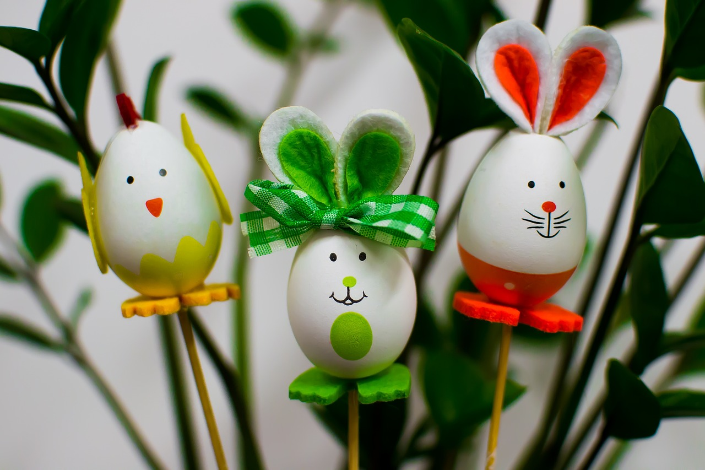

Oster Eier Dekoration
"In der Osterzeit erstrahlt das Zuhause in festlichem Glanz, und eine beliebte Dekoration, die den Frühling und die Freude des Osterfestes verkörpert, sind Osterhasen. Diese putzigen Kreaturen symbolisieren nicht nur den Osterhasen, der die Ostereier versteckt, sondern sind auch ein charmanter Bestandteil der Osterdeko.